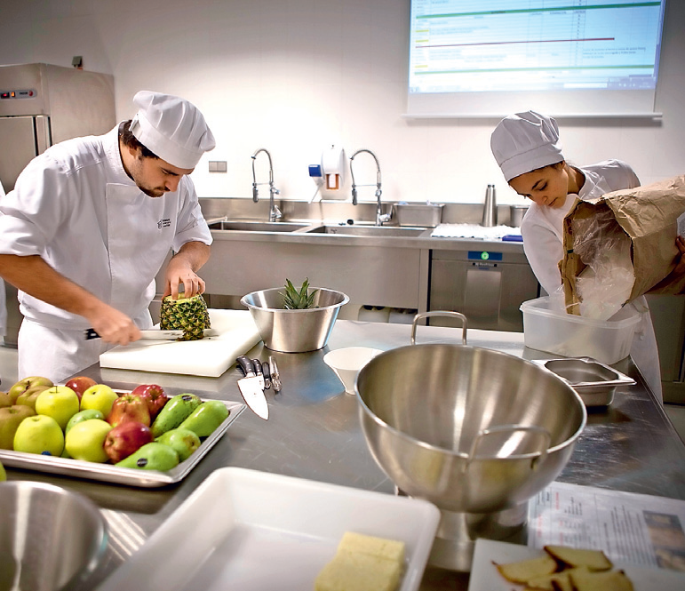
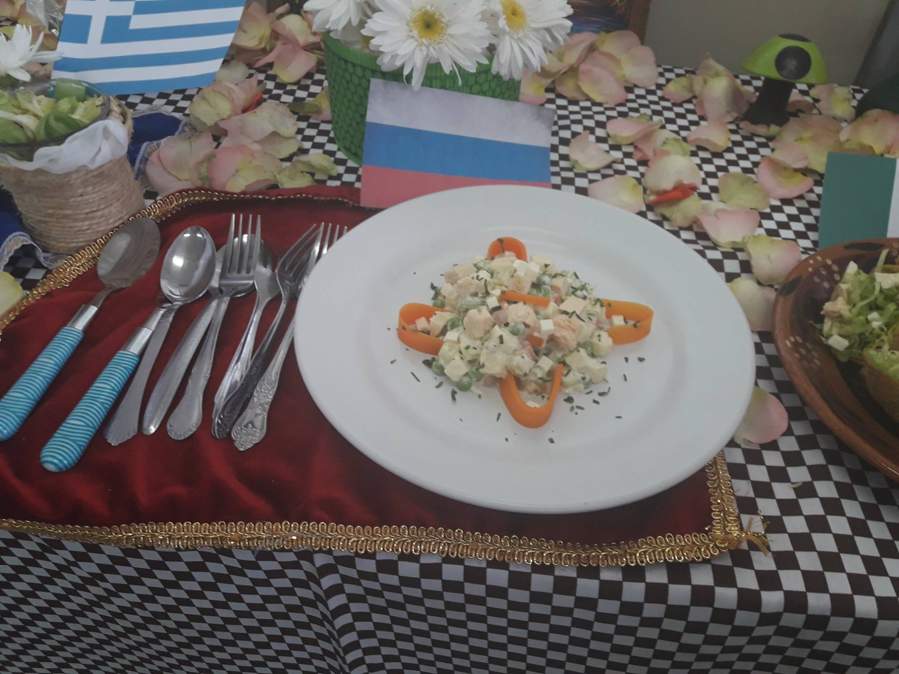

a importancia de la gastronomía radica en cada una de las regiones en donde se genere, permitiendo conocer la cultura de cada pueblo a los que le corresponde, ya que además de brindarnos sabores deliciosos y únicos, la gastronomía nos habla directamente de las costumbres y formas de vida de los habitantes de una región, hablándonos de la antigüedad de cada pueblo, de la utilización de los recursos de la localidad y de los adelantos que han ocurrido a lo largo de los años. Desde el punto de vista de la salud, la importancia de la gastronomía reside en tradiciones culinarias específicas, asociadas al incremento de ciertas enfermedades, inclusive favorables para la disminución de otras. Por ejemplo hay regiones en donde las personas tienen una esperanza de vida alta, y esto en muchos casos se debe a la alimentación que reciben.
|  |
|---|
Se muestra Algunas Imagenes:
La administración de empresas es una actividad destinada a organizar los recursos empresariales, humanos y materiales, en vistas a la consecución de sus objetivos. Para ello se elabora un plan estratégico en miras a la misión o fin a largo plazo que la organización se propone. Para planificar se deben tomar en cuenta las fortalezas y debilidades del emprendimiento, y su relación con otras empresas, en cuanto a su posicionamiento relativo, para lo que se requiere una investigación del mercado del que se trate.

En el mundo actual, esto está conformado por las Empresas y Compañías, que tienen una organización en particular que permite definir distintas Áreas de Trabajo en las que se dividen las tareas de acuerdo a Especializaciones, teniendo los distintos empleados un rol en particular dependiendo no solo de su Formación Profesional, sino también de su eficiencia para lo cual han sido contratados. Una de estas áreas está justamente ligada a la Administración de Empresas, siendo básicamente la organización de los recursos disponibles en pos de lograr el Mayor Rendimiento posible ante el planteo de un Objetivo Particular como también de actuar como una especie de Organismo de Control hacia todos los sectores o áreas que estén funcionando dentro de una compañía.
Se muestra una imagen :
La carrera de Ingeniero Bioquímico es el de formar profesionales capaces de ejecutar, supervisar y dirigir las actividades propias para resolver problemas relacionados con las áreas de alimentos, las fermentaciones y los productos biológicos, además será capaz de diseñar productos y tecnologías en las mismas áreas.
 |
 |
|---|
Se muestra información sobre los niveles de estudio que nos ofrece TECNOLÓGICO DE ESTUDIOS SUPERIORES DE ECATEPEC

A continuacion nos dara informacion para como poder entrar al instituto
Presentar en copia y original los siguientes documentos:
1.-Acta de Nacimiento
2.-CURP
3.-INE
4.-Certificado de Bachillerato
5.-Orden de Cobro Comprobante de pago Bancario y Comprobante fiscal
1.-Presencial
2.-Modalidad a Distancia (MaD)
3.-Modalidad Semiescolarizada (MSE)
El aspirante al ingresar a la Licenciatura en Administración de Empresas deberá contar con los siguientes atributos en conocimientos, habilidades, actitudes y valores: Conocimientos: Básicos de matemáticas, contabilidad y finanzas, aspectos generales de los medios de información y comunicación, conceptos de cultura, identidad colectiva, globalización, competitividad, organización y conocimiento del contexto regional, nacional e internacional. Habilidades: Desarrollo de su inteligencia emocional, capacidad para el manejo pacífico de conflictos, utilización de los medios de información, para la negociación interpersonal y el trabajo en equipo, para establecer y mantener relaciones interpersonales con todos los niveles de la organización y personas externas a ella que faciliten el logro de objetivos organizacionales, para tomar decisiones, resolver problemáticas, dar respuestas críticas y creativas de manera multi, inter y transdisciplinariamente a las diversas experiencias y actividades personales, sociales o profesionales en el contexto local, regional, nacional e internacional, entre otras. Actitudes y Valores: Capacidad de asombro ante la realidad interna y externa, apertura a las incertidumbres en el conocimiento, búsqueda permanente de su autoconocimiento, empatía, apertura al diálogo, comprensión y tolerancia hacia la diversidad cultural, entre otras.
El egresado de la Licenciatura en Administración de Empresas tendrá las siguientes competencias en conocimientos, habilidades, actitudes y valores orientados en la formación disciplinaria en la que se desarrolla. Conocimientos: Sobre los fundamentos de las teorías administrativas, así como las diferentes disciplinas económico-administrativas, de la interrelación de las principales funciones de una empresa, para definir y establecer objetivos de diferentes niveles y funciones organizacionales, así como diseñar y aplicar estrategias, tácticas, políticas y otros tipos de planes para alcanzarlos, para analizar críticamente las nuevas propuestas teóricas y técnicas que surjan en el campo de su profesión a fin de aprovecharlas o rechazarlas o, de ser posible, innovarlas, entre otros. Habilidades: Para diseñar y establecer estructuras y procedimientos administrativos que faciliten el logro de los objetivos de la organización en sus diferentes niveles jerárquicos y funciones y que respondan a los cambios que sean necesarios en ella para el efecto; para formular y evaluar cursos alternativos de acción y tomar decisiones sustentadas en ello, aplicando, cuando sea pertinente, métodos y técnicas de investigación, para dirigir a otros hacia el logro de objetivos organizacionales mediante la delegación, la comunicación, la motivación, la orientación, la supervisión, la preservación de la disciplina, la solución de conflictos interpersonales y la administración del cambio, entre otros. Actitudes y Valores: Para realizar todas las acciones antes enunciadas de manera ética, creativa e innovadora, aprovechando óptimamente los recursos humanos, financieros, materiales y técnicos, apegándose al marco jurídico correspondiente y tomando en consideración el entorno social, económico, político, cultural y ecológico de la organización.
El egresado de la Licenciatura en Administración de Empresas será capaz de operar una micro, pequeña o mediana empresa y gran empresa, en los sectores de servicios, comercio, la transformación, la construcción; así también tendrá los conocimientos para generar una nueva empresa; o trabajar de manera independiente.

* Cubrir el 70% de créditos.
* Estar inscrito en 7mo semestre.
* La duración del servicio social es de 480 hrs con una duración de 6 meses.
* El servicio social se cursará por única ocasión.
* Contar con seguro facultativo.
* Firma de carta compromiso.
Algunos de los requisitos para Residencia Profesional son:
* Haber acreditado el Servicio Social
* Estar inscrito.
* La duración de R. P. es de 500 hrs con una duración de 4 meses.
* Se cursará por única ocasión.
* Contar con seguro facultativo.
* Firma de carta compromiso.
Licenciatura es el título que se obtiene tras realizar ciertos estudios de educación superior entre 4 y 6 años de duración. Por otro lado, cuando se obtiene esta titulación, quiere decir que se es una persona capacitada para cumplir con una serie de tareas en un ámbito determinado.
licenciatura en administración
informática
psicología
medicina
derecho
enfermería
ingeniería
diseño gráfico
educación física
informática
telecomunicaciones
química
industrial etc.
La ingeniería es una profesión en la que los conocimientos científicos y empíricos se aplican para la conversión óptima de los materiales y fuerzas de la naturaleza en usos prácticos para la humanidad, así como, la invención, perfeccionamiento y utilización de la técnica industrial, y a la resolución de problemas técnicos-sociales. Esta disciplina también es considera como un arte, debido a que la capacidad imaginativa y de creación del ser humano sobresale para concebir cosas que aún no existen, y es por medio de la aplicación de sus conocimientos científicos que transforma esas ideas en acción o en una realidad.


 1
1 2
2 4
4 6
6 7
7 9
9 10
10 11
11 5
5